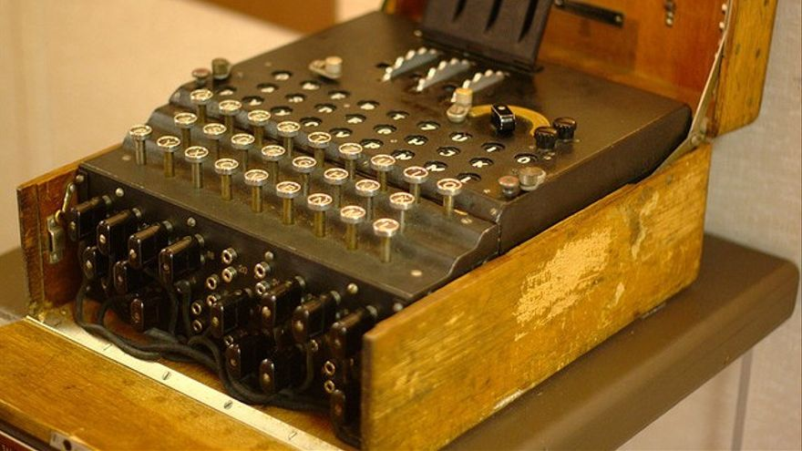

La encriptación es el proceso de cifrar cierta información de manera que solamente las personas autorizadas puedan descifrarla y entenderla. La encriptación garantiza no sólo la confidencialidad de la información, sino también su integridad. A pesar de que esta herramienta se ha desarrollado muchísimo gracias al auge de Internet y de la informática, la criptografía como tal existe desde hace miles de años. El propio imperio romano ya usaba la encriptación para enviar mensajes a sus distintas guarniciones de ejércitos. Existen dos tipos de encriptación: simétrica y asimétrica.
Encriptación
¿Qué es la encriptación?
Encriptación simétrica
La encriptación simétrica se basa en la idea de que tanto el emisor como el receptor usan la misma clave o llave, la cual sirve tanto para cifrar como para descifrar el mensaje. Esta llave estará compartida entre los dos participantes, por el emisor para cifrar la información y por el receptor para descifrarla. Este tipo de encriptación es más rápida que la encriptación asimétrica, de ahí que se use para cifrar grandes cantidades de datos. Sin embargo, este modelo presenta un gran problema: ya que las dos partes deben compartir la misma llave, en el caso de que los participantes se encuentren en lugares muy distantes, tendrían que compartir la llave por la red, de modo que ésta podría ser interceptada por un atacante y a tomar por culo el cifrado. Para solucionar esta problemática surge la encriptación asimétrica.
Encriptación asimétrica
En una comunicación entre dos sujetos, ambos tienen sus llaves pública y privada. Si el sujeto 1, llamémosle Ornstein, quiere enviar un mensaje al sujeto 2, llamémosle Smough, lo primero que deben hacer ambos es intercambiar sus llaves públicas. Una vez Ornstein tenga la llave pública de Smough, la usará para encriptar la información que vaya a enviar. Una vez encriptada, se la enviará a Smough, quien usará su llave privada (recordemos que esta NO se comparte) para desencriptar la información. Como vemos, aunque un atacante pudiera interceptar de primeras la llave pública, no le serviría de nada, puesto que la única manera de desencriptar un documento es usando la llave privada que va a asociada a la llave pública con la que se encriptó. De igual forma, aunque interceptara el mensaje cifrado y la llave pública, seguiría sin servirle de nada. Este es el primer uso de la encriptación asimétrica, cifrar la información. Sin embargo, encontramos un segundo uso: asegurar la integridad y procedencia de los datos.
Supongamos que Ornstein quiere enviar a Smough un mensaje, y es muy importante que Smough tenga la certeza de que ese mensaje ha sido escrito por Ornstein. Para ello, Ornstein enviará su clave pública a Smough y, una vez haya escrito el mensaje, lo cifrará usando su clave privada. Una vez cifrado, se lo envía a Smough quien, usando la llave pública de Ornstein, lo desencriptará, lo cual significa que ese documento ha sido inequívocamente escrito por Ornstein, ya que ha podido ser descifrado usando la llave pública de Ornstein. Esto es lo que se conoce como firma digital, algo muy común hoy día para identificarnos de forma digital para realizar operaciones importantes que no pueden estar sujetas al error en la identificación. El algoritmo RSA es uno de los más usados en criptografía asimétrica, además de uno de los más sencillos de implementar.
La encriptación asimétrica, a pesar de ser más segura que la simétrica, es mucho más lenta a la hora de cifrar los mensajes, además de generar llaves y mensajes cifrados más pesados, por lo que puede no ser ideal para conjuntos de datos muy pesados.
Encriptación híbrida
 Una propuesta para reunir lo mejor de ambos métodos es la encriptación híbrida. En este método, cuando Ornstein va a enviarle un mensaje a Smough, lo primero que hace es generar una llave simétrica para cifrar su mensaje. Una vez que ha cifrado el mensaje usando la llave simétrica, encripta esta llave que ha generado usando la llave pública de Smough. Una vez hecho esto, le envía a Smough el mensaje y la llave simétrica, ambos encriptados. Cuando Smough los reciba, primero usará su llave privada para desencriptar la llave simétrica para, a continuación, descifrar el mensaje con la llave simétrica. Este método permite aprovechar la seguridad de la criptografía asimétrica y la ligereza y rapidez de la encriptación simétrica.
Una propuesta para reunir lo mejor de ambos métodos es la encriptación híbrida. En este método, cuando Ornstein va a enviarle un mensaje a Smough, lo primero que hace es generar una llave simétrica para cifrar su mensaje. Una vez que ha cifrado el mensaje usando la llave simétrica, encripta esta llave que ha generado usando la llave pública de Smough. Una vez hecho esto, le envía a Smough el mensaje y la llave simétrica, ambos encriptados. Cuando Smough los reciba, primero usará su llave privada para desencriptar la llave simétrica para, a continuación, descifrar el mensaje con la llave simétrica. Este método permite aprovechar la seguridad de la criptografía asimétrica y la ligereza y rapidez de la encriptación simétrica.
Máquina Enigma
 La máquina Enigma, usada por el ejército alemán durante la II G.M. para cifrar sus mensajes, es un claro ejemplo de encriptación simétrica. El aspecto de esta máquina era muy similar al de una máquina de escribir, añadiendo al teclado un panel con bombillas para cada letra y tres rotores, además de un panel inferior de conexiones. Cada vez que se pulsa una letra del teclado, sale de este una señal electromagnética cuyo recorrido es el siguiente: primero, pasa por el panel de conexiones en el cual se unen pares de letras con un cable, pudiendo formar 10 pares en total. Si por ejemplo pulsamos la E y la E está conectada con la M, el primer cifrado sería pasar de E a M. A continuación, la señal viajaría hasta los 3 rotores. En cada uno de estos, que cuentan con 26 letras por cada cara, se producirían dos cambios, uno al entrar y otro al salir. Al salir del tercer rotor, la señal entra a un reflector que genera otros dos cambios antes de hacer el mismo camino a la inversa hasta llegar al panel de bombillas que iluminará la letra resultante del cifrado. En total se producen 15 cambios desde que pulsamos una letra del teclado. El mensaje cifrado resultante es el que los generales nazis comunicaban por medio de radio para informar de ataques o de posiciones estratégicas relevantes.
Una característica que añadía seguridad extra a todo este proceso reside en los rotores. Lo primero a tener en cuenta es que, cada vez que se introducía una letra, el primer rotor giraba una vez. Cuando este rotor giraba las 26 veces, el segundo rotor giraba una vez. Cuando el segundo rotor hubiera completado 26 giros, el tercer rotor giraría una vez. El funcionamiento es exactamente el mismo que el de un reloj con las manecillas y el recorrido de horas, minutos y segundos. Además, conforme avanzó la guerra, los alemanes incluyeron dos rotores más (IV y V), que podían intercambiarse con alguno de los otros tres (I,II y III), dificultando así las posibles configuraciones diarias.
Y, ¿cómo descifraban el mensaje? Pues conociendo las conexiones exactas del panel de letras y la posición de los tres rotores, los cuales eran además intercambiables entre sí. La configuración de la máquina estaba planificada para cada día, y además cada mes se alteraban las posiciones de los rotores (llegado cierto punto, introdujeron dos rotores más para aumentar las combinaciones posibles). Gracias a esto, existían 158 962 555 217 826 distintas combinaciones del alfabeto. ¿Cuál fue el fallo del ejército alemán? La estupidez humana, ya que empezaron a ser erráticos en las claves que usaban para cada día, repitiendo patrones en muchas y ocasiones, además de que terminaban todos sus mensajes con la misma frase, ‘Heil Hitler!’ Gracias a esto, los aliados, encabezados por Alan Turing, consiguieron romper el mecanismo de Enigma.